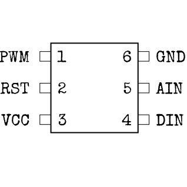
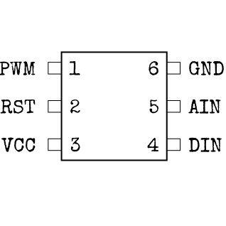

마이크로컨트롤러에 대하여
“마이크로” 컨트롤러라는데 왜 이렇게 크죠? 큰 폭발을 일으키려면 이 정도 되어야 하는 걸까요...
- 아래 그림들을 참고해, 컨트롤러 칩에 새겨진 타입과 칩의 크기를 이용해 핀 구성을 알아내세요.
- 컨트롤러 칩에 있는 흰색 마크가 1번 핀의 위치를 나타냅니다. 핀 번호는 먼저 1번 핀이 있는 변을 따라 1번부터 순서대로 매겨지고, 그 다음 그 반대 변을 따라 반대쪽 방향으로 순서대로 매겨집니다.
- 다음 페이지의 표를 참고해 각 핀 종류에 대응하는 올바른 색깔을 알아내세요.
- 각 핀에 대해 위 아래 화살표 버튼을 이용해 올바른 색깔을 선택하고 OK 버튼을 누릅니다. (자동으로 다음 핀이 선택됩니다.)
핀 구성
(Alt + 좌클릭으로 하이라이트 가능)스트라이크 (STRK) 컨트롤러:


다이오드 (LEDS) 컨트롤러:
 


카운트다운 (CNTD) 컨트롤러: